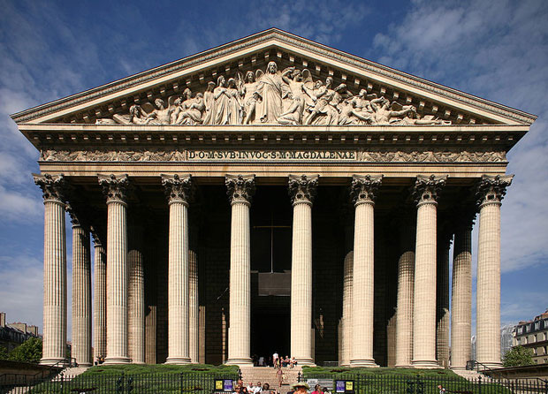

Paris houses many of history's more stunning spiritual relics-- cathedrals and chuches that stand today as breathtaking testimonials to a complex heritage of Christianity that dominated in Paris from the fall of the Roman Empire to the French Revolution. Many of these majestic cathedrals and churches fell into near-ruin in the wake of the Revolution, but revived interest in the 19th century brought about their restoration.

L'église de la Madeleine (French pronunciation: [leɡli:z də la madəlɛn], Madeleine Church; more formally, L'église Sainte-Marie-Madeleine; less formally, just La Madeleine) is a Roman Catholic church occupying a commanding position in the 8th arrondissement of Paris. It was designed in its present form as a temple to the glory of Napoleon's army. To its south lies the Place de la Concorde, to the east is the Place Vendôme, and to the west L'église Saint-Augustin.
The site of this edifice, centred at the end of rue Royale, a line-of-sight between Gabriel's twin hôtels in the Place de la Concorde, required a suitably monumental end from the time the square was established in 1755, as Place Louis XV. The settlement round the site was called Ville l'Évêque, for it had belonged to the bishop of Paris since the time of Philip II of France, when Bishop Maurice de Sully seized the synagogue that stood on the site from the Jews of Paris in 1182, and consecrated it a church dedicated to Mary Magdalene. The site in the suburban faubourg had been annexed to the city of Paris since 1722.
Two false starts were made on building a church on this site. The reconstruction of the older church consecrated to Mary Magdalene was considered. The first design, commissioned in 1757, with construction begun with the King's ceremonial placing of the cornerstone, April 3rd 1763, was halted in 1764; that first design, by Pierre Contant d'Ivry, was based on Jules Hardouin Mansart Late Baroque church of Les Invalides, with a dome surmounting a Latin cross. In 1777, Contant d'Ivry died and was replaced by his pupil Guillaume-Martin Couture, who decided to start anew, razing the incomplete construction, shortening the nave and basing his new, more centralized design on the Roman Pantheon. At the start of the Revolution of 1789, however, only the foundations and the grand portico had been finished; the choir of the former church was demolished in 1797, but work was discontinued while debate simmered as to what purpose the eventual building might serve in Revolutionary France: a library, a public ballroom, and a marketplace were all suggested. In the meantime, the National Assembly was housed in the Palais Bourbon behind a pedimented colonnaded front that was inspired by the completed portico at the far end of the former rue Royale.
In 1806 Napoleon made his decision to erect a memorial, a Temple de la Gloire de la Grande Armée ("Temple to the Glory of the Great Army"); following an elaborate competition with numerous entries and a jury that decided on a design by the architect Claude Étienne de Beaumont (1757-1811), the Emperor trumped all, instead commissioning Pierre-Alexandre Vignon (1763–1828) to build his design on an antique temple (Compare the Maison Carrée, in Nîmes) The then-existing foundations were razed, preserving the standing columns, and work begun anew. With completion of the Arc de Triomphe du Carrousel in 1808, the original commemorative role for the temple was blunted.
After the fall of Napoleon, with the Catholic reaction during the Restoration, King Louis XVIII determined that the structure would be used as a church, dedicated to Mary Magdalene. Vignon died in 1828 before completing the project and was replaced by Jacques-Marie Huvé. A new competition was set up in 1828-29, to determine the design for sculptures for the pediment, a Last Judgment, in which Mary Magdalene knelt to intercede for the Damned; the winner was Philippe Joseph Henri Lemaire. The July Monarchy rededicated the monument of repentance for Revolution as a monument of national reconciliation, and the nave was vaulted in 1831. In 1837 it was briefly suggested that the building might best be utilized as a train station, but the building was finally consecrated as a church in 1842.
The funeral of Chopin at the Church of the Madeleine in Paris was delayed almost two weeks, until October 30 1849. Chopin had requested that Mozart's Requiem be sung. The Requiem had major parts for female voices, but the Church of the Madeleine had never permitted female singers in its choir. The Church finally relented, on condition that the female singers remain behind a black velvet curtain.